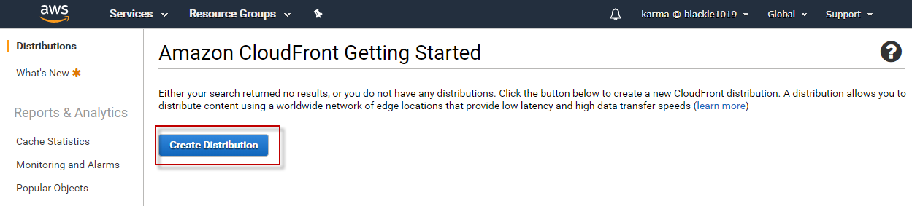
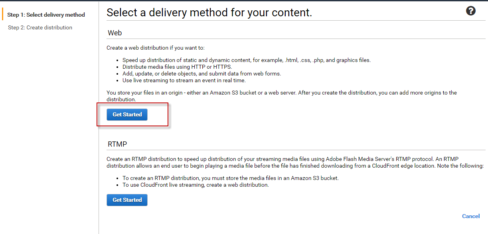
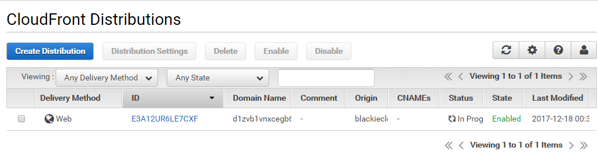
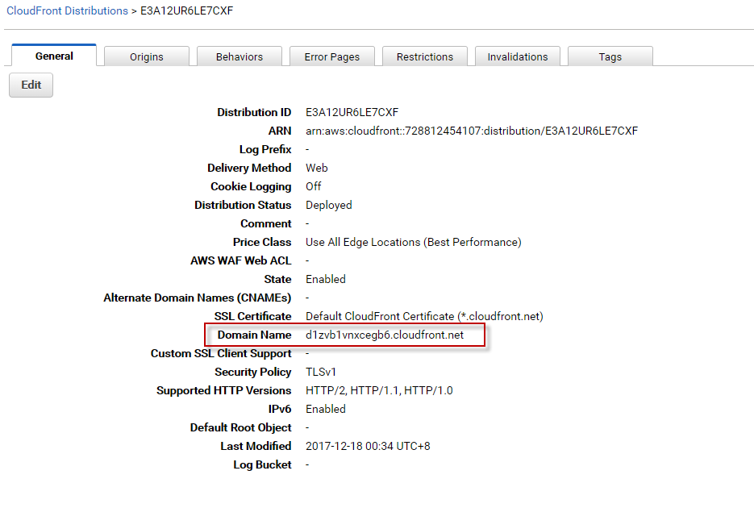
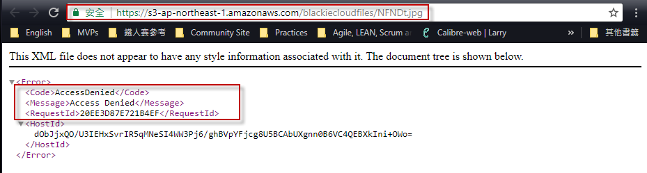

30天鐵人賽介紹 AWS 雲端世界 - 8: CloudFront 與 建立檔案 CDN 服務
What is CDN
CDN 指的是 Content delivery network 或 Content distribution network 的簡稱。
透過此技術可以將網站上的靜態內容（如.html文件、.jpg或.png圖片與css檔案等）和動態內容（例如數據庫查詢）緩存到CDN提供商位於全球各地的多個伺服器節點上面，可以有效的降低網路延遲(latency)對於網站所帶來的效能影響。
這邊可以參考 AWS 的介紹什么是 Amazon CloudFront？來體會一下為什麼CDN可以加速網站。
What is CloudFront
Amazon CloudFront 是提供 CDN 功能的服務，而他也不僅僅是靜態資源的提供者，也可以整合 AWS 其他服務提供更多動態處理包含用於減少 DDoS 攻擊次數的 AWS Shield、使用 Amazon S3、Elastic Load Balancing 或 Amazon EC2 做為應用程式的來源，以及使用 AWS Lambda 部屬動態網頁與排程程序都是他能夠配合的應用範圍，而本次的介紹先著重在CDN的應用上。
在進一步了解 CloudFront 必須重新回顧一下先前介紹的 Edge Location*，因為這個是 *CloudFront 可運作的最小單位：

結算至2017的11月，AWS 已經有超過 100 以上的edge locations，而且這個數字還在持續增加當中。
North America
Edge Locations: Ashburn, VA (3); Atlanta, GA (3); Boston, MA; Chicago, IL (2); Dallas/Fort Worth, TX (4); Denver, CO; Hayward, CA; Jacksonville, FL; Los Angeles, CA (2); Miami, FL (2); Minneapolis, MN; Montreal, QC; New York, NY (3); Newark, NJ (2); Palo Alto, CA; Philadelphia, PA; Phoenix, AZ; San Jose, CA; Seattle, WA (3); South Bend, IN; St. Louis, MO; Toronto, ON
Regional Edge Caches: Virginia; Ohio; Oregon
Europe
Edge Locations: Amsterdam, The Netherlands (2); Berlin, Germany; Dublin, Ireland; Frankfurt, Germany (6); Helsinki, Finland; London, England (5); Madrid, Spain (2); Manchester, England; Marseille, France; Milan, Italy; Munich, Germany; Palermo, Italy; Paris, France (3); Prague, Czech Republic; Stockholm, Sweden (3); Vienna, Austria; Warsaw, Poland; Zurich, Switzerland
Regional Edge Caches: Frankfurt, Germany; London, England
Asia
Edge Locations: Chennai, India; Hong Kong, China (3); Kuala Lumpur, Malaysia; Mumbai, India (2); Manila, Philippines; New Delhi, India; Osaka, Japan; Seoul, Korea (3); Singapore (2); Taipei, Taiwan; Tokyo, Japan (5)
Regional Edge Caches: Mumbai, India; Singapore; Seoul, South Korea; Tokyo, Japan
Australia
Edge Locations: Melbourne, Australia; Sydney, Australia
Regional Edge Caches: Sydney, Australia
South America
Edge Locations: São Paulo, Brazil (2); Rio de Janeiro, Brazil
Regional Edge Caches: São Paulo, Brazil
目前能作為來源(Origin)的服務包含了:
- S3 Bucket
- EC2 Instance
- Elastic Load Balancer
- Route53


而我們能透過 Distributions 來提供 Web 與 RTMP Distributions 兩項功能：
Web Distribution
用於網站應用程式
RTMP Distribution
用於影音串流
詳細內容可延續參考Working with Distributions
而在檔案的使用上，Edge locations 不只能 READ 從 Origin 來的資料，也可以修改放置該Edge location 接續使用。
而檔案的移除一般使用TTL(Time To Live)作為設定，等檔案到期就會自動的消失。另外，也支援直接清除緩存的功能，但使用此功能就需要額外收費了。
IP 與 CloudFront
AWS 目前有提供 JSON 格式發佈當前的 IP 範圍，可以下載 ip-ranges.json。有關更多資訊請參考AWS 的 IP 地址范围。
其他介紹
網路上可以找到很多AWS CDN的應用介紹，這邊看到這篇介紹的蠻詳細的，有興趣花點時間了解的可以參考這邊完整的針對 CloudFront 與 CDN 服務的應用的介紹(雖然偏向銷售但對全面瞭解是蠻好的)，
AWS CDN 內容傳遞網路。
Hands on Lab
這邊我們沿用先前的 S3 Bucket。
先登入 AWS Console後在中間的輸入框查詢 cloudfront ，或是透過左上角的 Services 點選到 Networking & Content Delivery 下的 cloudfront 服務：

接著按下新增並選擇 Web Distribution:


這邊我們可以選擇是否將原先的 S3 Bucket 存取權限限制住，只讓 cloudfront 能對外公開檔案(預設為否)：

上面這邊有修改了 http 轉到 https 的設定，如果怕有效能問題且確定支援 https 的環境可以大膽設定 https only。
而下方可以看到的就是 TTL 的設定:

最後可以設定你發佈的edge locations是要部分還是全部，另外也可以選定你的 http version(強烈建議選擇http2 提供更好的效能):
最後就等待服務部屬完成即可，可能會等到20分鐘以上，所以這邊就放著等吧：


等部屬完成後可以看到他配發的 CDN Domain:


然後我們回到原本的 S3 Bucket 取用其中一個檔案的公開連結：

接著將連結中的 domain 與 bucket 名稱置換成 CDN 的 Domain 就可以成功的看到 Cloudfront 所提供的檔案內容：
最後，我們可以嘗試將原先的 S3 bucket 中的 Public Read 權限關閉，可以看到原始檔案已經無法取用了：


而此時，我們切回去Cloudfront 所提供的檔案連結，則還是可以成功的讀取到該檔案，透過此方法我們可以有效的管理來源端的資料權限，提升安全性：